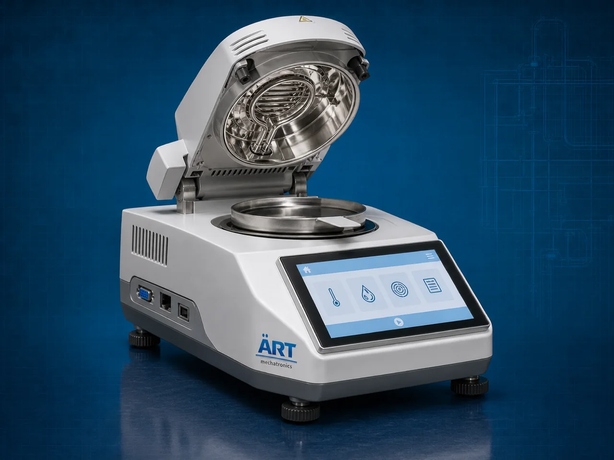

Moisture Analyzer Machine (Industrial Moisture Testing & Measurement System)
A Moisture Analyzer Machine, also known as a Moisture Testing Machine, Moisture Measurement System, Digital Moisture Analyzer, or Industrial Moisture Balance, is an advanced industrial testing and laboratory solution designed for moisture content analysis, humidity measurement, drying loss determination, quality control, product consistency verification, and precision material testing operations across food processing, pharmaceutical, agro, chemical, plastics, biomass, textile, and industrial manufacturing industries.

About the Moisture Analyzer
Moisture analyzer systems are widely used for:
- Moisture content testing
- Product quality analysis
- Drying loss measurement
- Food and agro moisture analysis
- Pharmaceutical material testing
- Chemical powder moisture verification
- Biomass and fuel testing
- Laboratory and R&D applications
The machine improves:
- Product quality consistency
- Drying process accuracy
- Quality control reliability
- Production standardization
- Laboratory testing efficiency
- Product shelf-life management
- Industrial process optimization
Industrial moisture analyzer machines use:
- Precision weighing systems
- Halogen or infrared heating technology
- Digital moisture calculation systems
- PLC and touchscreen HMI controls
- High-accuracy sensor technology
to rapidly measure moisture content and provide accurate testing results with superior precision and reliable industrial performance.
Moisture analyzer machines are widely used in industries such as:
Food processing industries Pharmaceutical industries Agro industries Chemical industries Plastic industries Biomass industries Textile industries Laboratory and R&D industries
where precise moisture analysis, quality control, and process consistency are essential.
The machine is highly suitable for:
- Food and grain moisture testing
- Pharmaceutical quality control
- Biomass moisture analysis
- Chemical powder testing
- Industrial drying process optimization
- Laboratory research and development systems
ART Mechatronics offers high-performance moisture analyzer machines, engineered for accurate industrial testing, fast moisture measurement, user-friendly operation, and reliable long-term industrial productivity.
Working Principle of Moisture Analyzer Machine
- 1. Sample Loading & Initial Weighing Process Sample material is placed on precision weighing pan for initial weight measurement.
- 2. Heating & Moisture Evaporation Process Machine uses halogen, infrared, or heating elements to evaporate moisture from sample material under controlled temperature conditions.
Advanced sensor technology continuously measures weight loss to calculate exact moisture content.
- 3. Moisture Testing & Analysis Operation Machine handles testing of: ✔ Food products ✔ Grains and seeds ✔ Spices and herbs ✔ Pharmaceutical powders ✔ Chemical materials ✔ Biomass products ✔ Plastic granules ✔ Industrial raw materials
accurately and continuously.
- 4. Moisture Calculation & Data Processing Process Machine performs: Moisture content analysis Drying loss measurement Quality verification Material testing Batch consistency checking Industrial quality control
for efficient laboratory and production testing operations.
- 5. Intelligent Automation & Data Management Integration Optional systems include: Digital data logging systems USB and printer connectivity Recipe memory storage Remote monitoring systems Multi-language touchscreen interface
- 6. Final Results Display & Reporting Test results displayed automatically for: Quality control departments Production monitoring R&D laboratories Export compliance Industrial process optimization
Types of Moisture Analyzer Machines
- 1. Halogen Moisture Analyzer Machine Designed for: ✔ Fast and accurate industrial moisture testing applications
- 2. Infrared Moisture Analyzer Suitable for: ✔ Laboratory and quality control testing systems
- 3. Digital Moisture Balance Machine Uses: ✔ Precision industrial moisture measurement operations
- 4. Grain Moisture Analyzer Machine Designed for: ✔ Agro and grain moisture testing applications
- 5. Online Moisture Analyzer System Suitable for: ✔ Continuous industrial production monitoring operations
- 6. Fully Automatic Industrial Moisture Testing System Designed for: ✔ Complete laboratory and production automation systems
Industries Using Moisture Analyzer Machines
🍅 Food Processing Industry Food ingredient moisture testing and quality control systems. 🌾 Agro Industry Grain, seed, spice, and agro product moisture analysis systems. 💊 Pharmaceutical Industry Powder moisture testing and medicine quality verification systems. ⚗️ Chemical Industry Chemical raw material and powder moisture testing operations. ♻️ Biomass Industry Biomass fuel and pellet moisture analysis systems. 🧵 Textile & Plastic Industry Material drying verification and quality control testing systems.
Features & Advantages
- High-precision moisture measurement operation
- Fast and reliable testing results
- Advanced digital analysis systems
- PLC and touchscreen control systems
- Improves product quality and drying consistency
- Reduces material rejection and process variation
- Supports multiple industrial and laboratory materials
- Reliable long-term industrial performance
- Smooth integration with industrial quality control systems
Technical Highlights
Machine Type: Moisture analyzer machine Industrial moisture testing system Digital moisture balance Material Compatibility: Food products Grains and seeds Pharmaceutical powders Chemical materials Biomass products Plastic granules Industrial raw materials Integration: Precision weighing systems Halogen or infrared heaters Digital sensor systems Data logging systems Features: Touchscreen HMI PLC control system USB and printer connectivity Recipe memory systems Remote monitoring systems Applications: Moisture testing Quality control Drying loss analysis Industrial process optimization Laboratory testing Material verification Automation: Semi-automatic Fully automatic industrial systems
Turnkey Moisture Testing Solutions
ART Mechatronics offers: Complete moisture analyzer systems Automatic moisture testing solutions Industrial quality control systems Laboratory and production integration systems Installation & commissioning After-sales service & AMC
Why Choose Art Mechatronics
Expertise in industrial testing and automation systems Customized moisture analysis solutions for multiple industries High-performance and precision testing technology Advanced PLC and digital control systems Proven industrial quality control performance across sectors
Applications
Food Processing Plants Agro Product Processing Units Pharmaceutical Laboratories Chemical Manufacturing Industries Biomass Processing Plants Industrial Quality Control Laboratories
Related Process Equipment machines
Get pricing & specs for the Moisture Analyzer
Share the product, target capacity, current process and plant location. These details help our engineers discuss the right machine or line configuration.
One partner, from design to start-up
ART Mechatronics designs, manufactures, installs and commissions your Moisture Analyzer solution with regional presence in India, UAE and Thailand.